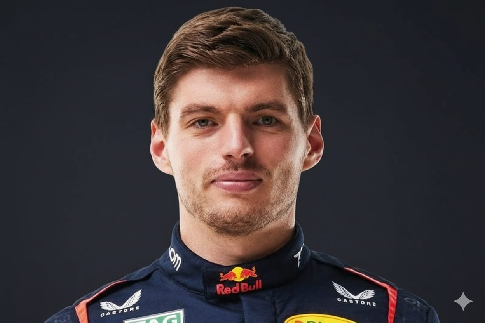
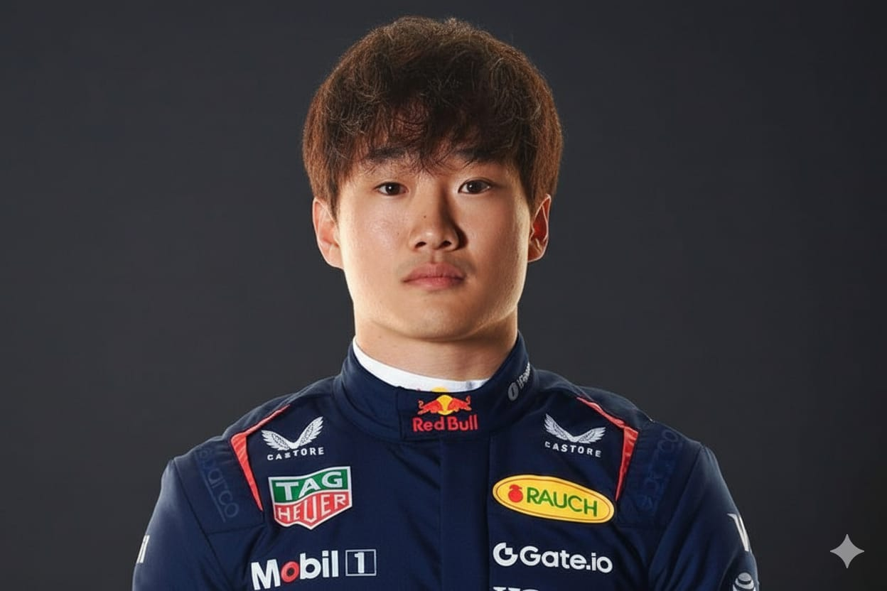

Camisa RBR
R$499,99

Boné RBR
R$299,99

Capacete Max Verstappen
R$2999,99

Miniatura RB21
R$399,99

A equipe iniciou sua trajetória quando a Red Bull GmbH adquiriu a antiga estrutura da equipe e fundou a Red Bull Racing no fim de 2004, passando a competir em 2005.
Ao longo dos anos, a equipe consolidou-se como uma das forças dominantes da Fórmula 1, conquistando campeonatos de pilotos e de construtores, e estabelecendo parcerias tecnológicas e de engenharia de destaque.
Em seu mais recente ciclo de sucesso, a equipe passou a operar sob o nome “Oracle Red Bull Racing” com o patrocínio-título da Oracle Corporation, integrando tecnologia de nuvem, análise de dados e simulações de alto desempenho para manter vantagem competitiva.
Para 2025, a Oracle Red Bull Racing tem como meta principal consolidar sua posição de ponta na Fórmula 1, buscando vencer tanto o campeonato de pilotos quanto o de construtores. Além disso, a equipe pretende ampliar sua eficiência técnica, operacional e digital, aproveitando ao máximo os investimentos em infraestrutura tecnológica.
Um objetivo chave é usar ainda mais intensivamente a computação em nuvem e simulações para decisões estratégicas em corrida, desenvolvimento de carro e engajamento com fãs — continuando a escalar seu uso de simulações e dados em tempo real.
Outro alvo para 2025 inclui a preparação intensiva para a nova geração de unidades de potência híbridas previstas para 2026 — ou seja, 2025 será um ano de ponte tecnológica e preparação para essa nova era.
Max Verstappen é um piloto holandês da Fórmula 1 conhecido por seu talento, coragem e estilo agressivo nas pistas. Estreou muito jovem e rapidamente se destacou por sua velocidade e controle.
Correndo pela Red Bull Racing, tornou-se um dos maiores nomes da categoria, reconhecido por sua frieza e determinação em busca da vitória.
Yuki Tsunoda é um piloto japonês da Fórmula 1 conhecido por seu estilo agressivo e carisma. Nascido em 2000, ele rapidamente se destacou nas categorias de base pelo talento e velocidade natural.
Correndo pela equipe Visa Cash App RB, Tsunoda mostra grande evolução a cada temporada, combinando ousadia, técnica e determinação para representar o Japão no mais alto nível do automobilismo.
O RB21 é o carro de Fórmula 1 desenvolvido pela Oracle Red Bull Racing para a temporada de 2025. Representa a mais recente evolução do projeto técnico da equipe, combinando desempenho aerodinâmico refinado, equilíbrio mecânico e integração avançada entre chassi e unidade de potência.
Após o enorme sucesso do RB19 e do RB20, o RB21 foi projetado com base na mesma filosofia de eficiência e velocidade, mas incorporando ajustes detalhados para se adaptar às novas diretrizes de desenvolvimento que antecedem a era de motores híbridos de 2026. O carro mantém a identidade visual tradicional da Red Bull, com o azul escuro, o amarelo e o vermelho característicos da marca.
O chassi do RB21 foi concebido para proporcionar máximo downforce com mínima resistência ao ar, explorando conceitos avançados de fluxo de ar sob o assoalho e pelas laterais. A equipe técnica, liderada por Adrian Newey e Pierre Waché, continuou a buscar o equilíbrio ideal entre estabilidade em curvas e velocidade em retas longas.
A unidade de potência, desenvolvida em parceria com a Honda e a Red Bull Powertrains, entrega alta eficiência energética e potência impressionante, apoiada por sistemas híbridos otimizados. Essa colaboração é um dos pontos fortes da Red Bull, que utiliza tecnologias de ponta em análise de dados e simulações para maximizar o desempenho do carro.
Com o RB21, a Oracle Red Bull Racing busca continuar dominando a Fórmula 1, mantendo-se competitiva em todas as pistas e ampliando sua coleção de vitórias e títulos. O carro simboliza o compromisso da equipe com a inovação, a precisão e a busca constante pela perfeição dentro e fora das pistas.